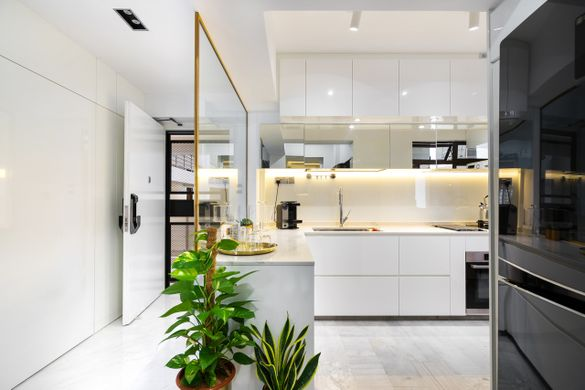
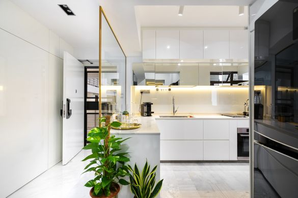

MINIMALISM INTERIOR DESIGN STYLE
What is Minimalism?
Concise and simple, minimalism interior design style in the interior of the apartment,
home or office brings a harmony of space and light. This is elegant, modern, lightweight and aesthetically perfect style.
Apartment in a minimalist style is filled with air, the feeling of freedom and elegance of simple forms.
Minimalistic interior design in the real modern apartment of big cities we can meet rather in Western Europe,
which gravitates to economy, inner conciseness and spacious completeness of this style.
Order a design project of your apartment, home or office in a minimalist style means choosing refined simplicity and
elegance: in big cities all over the world we can meet people who are not indifferent to the beauty of this laconic style.
Minimalist interior is
Design in the style of minimalism implies smooth surfaces, geometric shapes, straight clean lines and nothing more:
only functional pieces of furniture, single color decoration, only the play of light instead of the fancy decorations.
Minimalist interior is a complexly thought-out simplicity, rigor and ease, elegance without pretentiousness and
practicality without congestion. Photos of minimalistic interior look like illustrations of the cutting-edge art magazine,
devoted to secrets of creating a truly beautiful spaces.
The history of the emergence of style
Minimalism was developed in the second half of XX century., appeared as the reaction designers to abundance
of contemporary trends.
Fundamentals of minimalism taken from Japanese culture. Interior of traditional Japanese homes – Minka –
is not like the decoration of European homes.
The basis of the Japanese home are shed and timber supports, latticed walls (shoji), pasted with rice paper and tatami (mat).
The only thing that attracts attention is a scroll with a painting or a poem, which is located in the niche;
and a flower (or floral arrangement – “ikebana”) underneath.
Japanese minimalism in the interior is the space of emptiness, the formation of a special area of contemplation and detachment.
European minimalism is less radical. Simplicity here is coupled with functionality.
Where does Minimalism appropriate?
To order design of the apartment or the house in a minimalist style can brave people who are not afraid to abandon
the usual understanding of the comfort,which is oriented to personality itself and the able to see the true beauty of ordinary things.
Minimalist design can be implemented in the penthouse. Emphasized simplicity of this style is perfect for rooms with large windows located
at high altitudes,creating a unique atmosphere of freedom, freshness and spaciousness.
Minimalism interior design style in the dwelling rooms
Minimalist style in the living room involves the use of modern materials to create perfectly smooth light background and an atmosphere
of calm and deliberate simplicity.
Minimalism in interior of the living room is a simple but high quality and comfortable furniture with rigid armrests,
a small coffee table made of glass or plastic, built-in appliances, smart lighting and understated colors.
Such living is cozy and beautiful in its own way.
Why Minimalism?
Complex and simple at the same time interior design, Minimalism embodies the laconic verge of beauty comprehension:
without pathos, frills and luxuries. Minimalism design is a style, elegance and practicality:
bright pictures clearly demonstrate the special charm of this style.
Order interior design in minimalist style means to choose quality and sophistication,
functionality and simplicity, harmony and freedom.
 
